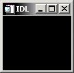

The WIDGET_DRAW function is used to create draw widgets. Draw widgets are rectangular areas that IDL treats as standard graphics windows. Draw widgets can use either IDL Direct graphics or IDL Object graphics, depending on the value of the GRAPHICS_LEVEL keyword. Any graphical output can be directed to a draw widget. Draw widgets can have optional scr oll bars to allow viewing a larger graphics area than could otherwise be displayed in the widget’s visible area.
|
 |
Note: On some systems, when backing store is provided by the window system (RETAIN=1), reading data from a window using TVRD( ) may cause unexpected results. For example, data may be improperly read from the window even when the image displayed on screen is correct. Having IDL provide the backing store (RETAIN=2) ensures that the window contents will be read properly.
For a more detailed discussion of the draw widget, along with examples, see About Draw Widgets .
Result = WIDGET_DRAW( Parent [, / APP_SCROLL ] [, / BUTTON_EVENTS ] [, CLASSNAME = string ] [, / COLOR_MODEL ] [, COLORS = integer ] [, DRAG_NOTIFY = string ] [, / DROP_EVENTS ] [, EVENT_FUNC = string ] [, EVENT_PRO = string ] [, / EXPOSE_EVENTS ] [, FRAME = width ] [, FUNC_GET_VALUE = string ] [, GRAPHICS_LEVEL =2] [, GROUP_LEADER = widget_id ] [, IGNORE_ACCELERATORS = value ][, KEYBOARD_EVENTS ={1 | 2}] [, KILL_NOTIFY = string ] [, / MOTION_EVENTS ] [, / NO_COPY ] [, NOTIFY_REALIZE = string ] [, PRO_SET_VALUE = string ] [, RENDERER ={0 | 1}] [, RESOURCE_NAME = string ] [, RETAIN ={0 | 1 | 2}] [, SCR_XSIZE = width ] [, SCR_YSIZE = height ] [, / SCROLL ] [, / SENSITIVE ] [, TOOLTIP = string ] [, / TRACKING_EVENTS ] [, UNAME = string ] [, UNITS ={0 | 1 | 2}] [, UVALUE = value ] [, / VIEWPORT_EVENTS ] [, / WHEEL_EVENTS ] [, XOFFSET = value ] [, XSIZE = value ] [, X_SCROLL_SIZE = width ] [, YOFFSET = value ] [, YSIZE = value ] [, Y_SCROLL_SIZE = height ] )
The returned value of this function is the widget ID of the newly-created draw widget.
The widget ID of the parent widget of the new draw widget.
Set this keyword to create a scrollable draw widget with horizontal and vertical scrollbars that allow the user to view portions of the widget contents that are not currently on the screen.
The drawable area of a draw widget created with the APP_SCROLL keyword is the same size as the viewable area (the viewport ). This is useful for displaying very large images, because the memory used by a draw widget is directly related to the size of the drawable area. A draw widget created with the APP_SCROLL keyword also has the concept of a virtual drawable area , which is the size of the entire image. The fact that only a portion of the entire image is held in memory means that you must capture events generated when the user adjusts the scroll bars and display the correct portion of the image in your event-handling code.
Note: If the image you are displaying is relatively small or memory is not a concern, consider using the SCROLL keyword rather than APP_SCROLL. With SCROLL, the drawable area is the size of the entire image; this allows IDL to display the appropriate portions of the image automatically when the user adjusts the scroll bars. See SCROLL and Scrolling Draw Widgets for details.
Specify the size of the viewport using the X_SCROLL_SIZE and Y_SCROLL_SIZE keywords, and the size of the virtual drawable area using the XSIZE and YSIZE keywords. If APP_SCROLL is set, the application generates viewport events even if the VIEWPORT_EVENTS keyword is not set.
If the drawable area uses Direct Graphics (that is, if GRAPHICS_LEVEL is not set equal to 2), system backing store is used by default and the viewport is automatically restored after it has been obscured. If you prefer to manually restore the viewport in an event-handling routine, set RETAIN=0 and EXPOSE_EVENTS=1; this allows you to redraw the virtual canvas when your application receives expose events.
If the drawable area uses Object Graphics (that is, if the GRAPHICS_LEVEL keyword is set equal to 2), the application will not automatically restore the viewport, and will generate expose events as if RETAIN=0 and EXPOSE_EVENTS=1 had been set.
Set this keyword to make the draw widget generate events when the mouse buttons are pressed or released (and the mouse pointer is in the draw widget). Normally, draw widgets do not generate events.
You can use the event structure generated when the BUTTON_EVENTS keyword is set to emulate the functionality of the CONTEXT_EVENTS keyword to WIDGET_BASE, WIDGET_LIST, and WIDGET_TEXT. To determine whether the user clicked the right mouse button, use the test:
IF (event.release EQ 4)
where event holds the widget event structure.
For more on detecting and handling context menu events, see Context-Sensitive>Menus .
Note: This keyword is honored only if the GRAPHICS_LEVEL keyword is set to 2.
Set this keyword to a string containing the name of the window object class to be instantiated and associated with this draw widget. Possible values are:
IDLgrWindow
IDLitWindow
The default is IDLgrWindow. If the application needs to process IDLitWindow events (timer events for controlling animations, for example), consider using the IDLitWindow class instead.
Set this keyword equal to 1 (one) to cause the draw widget’s associated IDLgrWindow object to use indexed color. If the COLOR_MODEL keyword is not set, or is set to a value other than one, the draw widget will use RGB color.
This keyword is only valid when the draw widget uses IDL Object Graphics. (The graphics type used by a draw widget is determined by setting the GRAPHICS_LEVEL keyword to keyword.)
The maximum number of color table indices to be used. This parameter has effect only if it is supplied when the first IDL graphics window is created.
If COLORS is not specified when the first window is created, all or most of the available color indices are allocated, depending upon the window system in use.
To use monochrome windows on a color display, set COLORS equal to 2 when creating the first window. One color table is maintained for all IDL windows. A negative value for COLORS specifies that all but the given number of colors from the shared color table should be used.
Set this keyword equal to a string containing the name of a function that will be automatically called as the end-user drags over the widget. Alternatively, set this keyword equal to the string <default> (including the < and > characters) to use the system default callback.
The callback function’s return value informs the widget system “if and where” the drag source can be dropped onto the widget. The widget system then uses this information to provide the end-user with visual feedback about the legality and location of a drop. A secondary ability of the return value is to turn on the plus (+) indicator, which can be handy to distinguish between copies and moves. The following table details the meanings of the valid return values, which can be OR-ed together:
|
Value |
Meaning |
|
0 |
User cannot drop |
|
1 |
User can drop onto |
|
2 |
Show the plus indicator |
When a DRAG_NOTIFY callback is not explicitly set on the draw widget or is set to the string <default> then the widget system default callback is used. The default callback returns 0 if drop events are not enabled (DROP_EVENTS=0) and 1 otherwise.
The drag notification callback routine has the following signature:
FUNCTION Callback_Function_Name,
Destination
,
Source
, $
X
,
Y
,
Modifiers
,
Default
where
Callback_Function_Name is the name of the callback function. This value is specified as the value of the DRAG_NOTIFY keyword.
Destination is the widget ID of the draw widget over which the item is dragged.
Source is the widget ID of the item being dragged (this must currently be a tree widget node).
X is the position to the right of the lower left corner of the drawable area, in device coordinates (pixels).
Y is the position above the lower left corner of the drawable area, in device coordinates (pixels).
Modifiers indicates the state of the modifier keys. The widget system generates them by OR-ing the following values together for the depressed keys:
|
Bitmask |
Modifier Key |
|
1 |
Shift |
|
2 |
Control |
|
4 |
Caps Lock |
|
8 |
Alt |
For UNIX, the Alt key is the currently mapped MOD1 key.
Default is the value that the default callback would have returned. A common usage is to have the callback return its value after modifying it to show the + indicator.
Specifying a drag notification callback does not enable drop events; you must set the DROP_EVENTS keyword to specify that drop events should be generated. For information on dragging and dropping and draw widgets, see About Draw Widgets .
Note: Custom drag notifications can pose potential dangers, please see the section Responding to Drag Notifications (Callbacks) to learn more about these potential dangers.
Use this keyword to specify whether or not the widget will generate drop events when the user drags an item onto the draw area with the mouse cursor and releases the mouse button. See Widget Events Returned by Draw Widgets for an explanation of the event structure.
A value of 1 (one) causes the widget to generate drop events and a value of 0 (zero) causes the widget to not generate drop events. The default is to not generate drop events. Specifying a DRAG_NOTIFY callback does not affect a widget’s ability to generate drop events.
A string containing the name of a function to be called by the WIDGET_EVENT function when an event arrives from a widget in the widget hierarchy rooted at the newly-created widget.
A string containing the name of a procedure to be called by the WIDGET_EVENT function when an event arrives from a widget in the widget hierarchy rooted at the newly-created widget.
Set this keyword to make the draw widget generate event when the visibility of the draw widget changes. This may occur when the widget is hidden behind something else on the screen, brought to the foreground, or when the scroll bars are moved. Normally, draw widgets do not generate events.
If this keyword is set, expose events will be generated only when IDL is unable to restore the contents of the window itself. After the initial draw, expose events are not issued when GRAPHICS_LEVEL=2 and the software renderer is being used (RENDERER=1). In such cases, expose events are not issued because IDL can internally refresh the window itself. On platforms for which OpenGL support is not offered, the software renderer is always being used, and therefore, expose events are not issued after the initial draw.
Note: When using hardware rendering, you must explicitly disable backing store (by setting RETAIN=0) in order to generate expose events. Additional expose events may be generated if both EXPOSE_EVENTS and RETAIN=1 are turned on.
Note: Large numbers of events may be generated when EXPOSE_EVENTS is specified. You may wish to compress the events (perhaps using a timer) and only act on a subset.
The value of this keyword specifies the width of a frame in units specified by the UNITS keyword (pixels are the default) to be drawn around the borders of the widget. Note that this keyword is only a hint to the toolkit, and may be ignored in some instances.
A string containing the name of a function to be called when the GET_VALUE keyword to the WIDGET_CONTROL procedure is called for this widget. Using this technique allows you to change the value that should be returned for a widget. Compound widgets use this ability to define their values transparently to the user.
Set this keyword equal to 2 (two) to use IDL Object Graphics in the draw widget. If the GRAPHICS_LEVEL keyword is not set, or is set to a value other than two, the draw widget will use ID L Direct Graphics.
The widget ID of an existing widget that serves as “group leader” for the newly-created widget. When a group leader is killed, for any reason, all widgets in the group are also destroyed.
A given widget can be in more than one group. The WIDGET_CONTROL procedure can be used to add additional group associations to a widget. It is not possible to remove a widget from an existing group.
Set this keyword to specify what WIDGET_BUTTON a ccelerators are to be ignored when this draw widget has keyboard focus. Setting IGNORE_ACCELERATORS allows a defined list of accelerators to be processed by the draw widget instead of by the conflicting accelerated button. Valid values are:
A string or string array containing any value that is legal for WIDGET_BUTTON’s ACCELERATOR keyword
The number 1, indicating all accelerators should be ignored
Ordinarily, accelerators are processed before keyboard events reach the widget that has the keyboard focus. Setting IGNORE_ACCELERATORS allows a defined list of accelerators to be processed by the draw widget instead of by associated buttons or menu items. Once the draw widget loses focus, all specified accelerators are automatically re-enabled.
See Disabling Button Widget Accelerators for usage details and examples.
Set this keyword equal to 1 (one) or 2 to make the draw widget generate an event when it has the keyboard focus and a key is pressed or released. (The method by which a widget receives the keyboard focus is dependent on the window manager in use.) The value of the key pressed is reported in either the CH or the KEY field of the event structure, depending on the type of key pressed. See Widget Events Returned by Draw Widgets for details.
If this keyword is set equal to 1, the draw widget will generate an event when a “normal” key is pressed. “Normal” keys include all keys except function keys and the modifier keys: Shift, Control, Caps Lock, and Alt. If a modifier key is pressed at the same time as a normal key, the value of the modifier key is reported in the MODIFIERS field of the event structure.
If this keyword is set equal to 2, the draw widget will generate an event when either a normal key or a modifier key is pressed. Values for modifier keys are reported in the KEY field of the event structure, and the MODIFIERS field contains zero.
Note: Keyboard events are never generated for function keys.
Set this keyword to a string that contains the name of a procedure to be called automatically when the specified widget dies. Each widget is allowed a single such “callback” procedure. It can be removed by setting the routine to an empty string ( '' ).
The callback routine is called with the widget identifier as its only argument. At that point, the widget identifier can only be used with the WIDGET_CONTROL procedure to get or set the user value. All other requests that require a widget ID are disallowed for the target widget. The callback is not issued until the WIDGET_EVENT function is called.
Set this keyword to make the draw widget generate events when the mouse cursor moves across the widget. Normally, draw widgets do not generate events.
Draw widgets that return motion events can generate a large number of events that can result in poor performance on slower machines.
Note that it is possible to generate motion events with coordinates outside the draw widget. If you position the mouse cursor inside the draw widget, press the mouse button, and drag the cursor out of the draw widget, the X and Y fields of the widget event will specify coordinates outside the draw widget.
See Accessing Draw Widget Events for more information.
Usually, when setting or getting widget user values, either at widget creation or using the SET_UVALUE and GET_UVALUE keywords to WIDGET_CONTROL, IDL makes a second copy of the data being transferred. Although this technique is fine for small data, it can have a significant memory cost when the data being copied is large.
If the NO_COPY keyword is set, IDL handles these operations differently. Rather than copy the source data, it takes the data away from the source and attaches it directly to the destination. This feature can be used by compound widgets to obtain state information from a UVALUE without all the memory copying that would otherwise occur. However, it has the side effect of causing the source variable to become undefined. On a “set” operation (using the UVALUE keyword to WIDGET_DRAW or the SET_UVALUE keyword to WIDGET_CONTROL), the variable passed as value becomes undefined. On a “get” operation (GET_UVALUE keyword to WIDGET_CONTROL), the user value of the widget in question becomes undefined.
Set this keyword to a string that contains the name of a procedure to be called automatically when the specified widget is realized. This callback occurs just once (because widgets are realized only once). Each widget is allowed a single such “callback” procedure. It can be removed by setting the routine to an empty string ( '' ). The callback routine is called with the widget ID as its only argument.
A string containing the name of a procedure to be called when the SET_VALUE keyword to the WIDGET_CONTROL procedure is called for this widget. See the description of the PRO_SET_VALUE keyword to WIDGET_CONTROL for information on using this keyword.
Set this keyword to an integer value indicating which graphics renderer to use when drawing objects within the window. Valid values are:
0 = Platform native OpenGL
1 = IDL’s software implementation
By default, your platform’s native OpenGL implementation is used. If your platform does not have a native OpenGL implementation, IDL’s software implementation is used regardless of the value of this property. Your choice of renderer may also affect the maximum size of a draw widget. See IDLgrWindow for details.
A string containing an X Window System resource name to be applied to the widget. See RESOURCE_NAME for a complete discussion of this keyword.
Set this keyword to 0, 1, or 2 to specify how backing store should be handled for the draw widget. RETAIN=0 specifies no backing store. RETAIN=1 requests that the server or window system provide backing store. RETAIN=2 specifies that IDL provide backing store directly. See Backing Store for details on the use of RETAIN with Direct Graphics. For more information on the use of RETAIN with Object Graphics, see IDLgrWindow Properties .
Note: On Macintosh and Microsoft Windows systems, if you are using software rendering (that is, the RENDERER keyword is set equal to one, or your platform does not have a native OpenGL implementation), IDL will refresh the window automatically regardless of the setting of the RETAIN property.
Set this keyword to the desired “screen” width of the widget, in units specified by the UNITS keyword (pixels are the default). In many cases, setting this keyword is the same as setting the XSIZE keyword.
Set this keyword to the desired “screen” height of the widget, in units specified by the UNITS keyword (pixels are the default). In many cases, setting this keyword is the same as setting the YSIZE keyword.
Set this keyword to create a scrollable draw widget with horizontal and vertical scrollbars that allow the user to view portions of the widget contents that are not currently on the screen.
Specify the dimensions of the viewport using the X_SCROLL_SIZE and Y_SCROLL_SIZE keywords, and the dimensions of the entire drawable area using the XSIZE and YSIZE keywords. A scrollbar will be added if the viewport dimension is smaller than the corresponding dimension of the drawable area.
Note: While the viewport of a draw widget created with the SCROLL keyword may be smaller than the entire image, the drawable area itself is the same size as the image, and uses memory commensurately. If you want to display a portion of a very large image, consider using the APP_SCROLL keyword rather than SCROLL. The drawable area of a draw widget created with APP_SCROLL is the same size as the viewport. This saves memory when the displayed image is large, but requires extra work on the programmer’s part to handle viewport events and display the appropriate portion of the image. See APP_SCROLL and Scrolling Draw Widgets for details.
Set this keyword to control the initial sensitivity state of the widget.
If SENSITIVE is zero, the widget becomes insensitive. If nonzero, it becomes sensitive. When a widget is sensitive, it has normal appearance and can receive user input. For example, a sensitive button widget can be activated by moving the mouse cursor over it and pressing a mouse button. When a widget is insensitive, it indicates the fact by changing its appearance, looking disabled, and it ignores any input.
Sensitivity can be used to control when a user is allowed to manipulate the widget. Note that some widgets do not change their appearance when they are made insensitive, but they cease generating events.
After creating the widget hierarchy, you can change the sensitivity state using the SENSITIVE keyword with the WIDGET_CONTROL procedure.
Set this keyword to a string that will be displayed when the cursor hovers over the widget. For UNIX platforms, this string must be non-zero in length.
Note: If your application uses hardware rendering and a RETAIN setting of either zero or one, tooltips will cause draw widgets to generate expose events if the tooltip obscures the drawable area. This is true even if the tooltip is associated with another widget.
Note: You can use language catalogs to internationalize this value with strings in particular languages.
Set this keyword to cause widget tracking events to be issued for the widget whenever the mouse pointer enters or leaves the region covered by that widget. For the structure of tracking events, see TRACKING_EVENTS in the documentation for WIDGET_BASE.
Set this keyword to a string that can be used to identify the widget in your code. You can associate a name with each widget in a specific hierarchy, and then use that name to query the widget hierarchy and get the correct widget ID.
To query the widget hierarchy, use the WIDGET_INFO function with the FIND_BY_UNAME keyword. The UNAME should be unique to the widget hierarchy because the FIND_BY_UNAME keyword returns the ID of the first widget with the specified name.
Set this keyword to specify the units used when supplying measurements or position values. Set UNITS equal to 0 (zero) to specify that all measurements are in pixels (this is the default), to 1 (one) to specify that all measurements are in inches, or to 2 (two) to specify that all measurements are in centimeters. This keyword does not change the units used in a widget event structure or in most of the fields of the geometry structure returned by WIDGET_INFO.
The “user value” to be assigned to the widget.
Each widget can contain a user-specified value of any data type and organization. This value is not used by the widget in any way, but exists entirely for the convenience of the IDL programmer. This keyword allows you to set this value when the widget is first created.
If UVALUE is not present, the widget’s initial user value is undefined.
Set this keyword to enable viewport motion events for draw widgets.
Set this keyword to enable mouse scroll wheel events, which are disabled by default. An event is generated when scroll wheel events are enabled, the widget has the focus (Windows) or the mouse pointer is over the draw widget (Motif), and the user rolls the scroll wheel. This event reports the scroll direction and distance, current mouse coordinates, and modifier keys. See Widget Events Returned by Draw Widgets for more information.
When wheel events are not enabled, rolling the scroll wheel affects the vertical scroll bar, if present.
The horizontal offset of the widget in units specified by the UNITS keyword (pixels are the default) relative to its parent.
Specifying an offset relative to a row or column major base widget does not work because those widgets enforce their own layout policies. This keyword is primarily of use relative to a plain base widget. Note that it is best to avoid using this style of widget layout.
The width of the widget in units specified by the UNITS keyword (pixels are the default). Most widgets attempt to size themselves to fit the situation. However, if the desired effect is not produced, use this keyword to override it. This keyword is only a “hint” to the toolkit and may be ignored in some situations. By default, draw widgets are 100 pixels wide by 100 pixels high.
The XSIZE keyword always specifies the width of a widget. When the SCROLL keyword is specified, this size is not necessarily the same as the width of the visible area. The X_SCROLL_SIZE keyword allows you to set the width of the scrolling viewport independently of the actual width of the widget.
Use of the X_SCROLL_SIZE keyword implies SCROLL.
The vertical offset of the widget in units specified by the UNITS keyword (pixels are the default) relative to its parent. This offset is specified relative to the upper left corner of the parent widget.
Specifying an offset relative to a row or column major base widget does not work because those widgets enforce their own layout policies. This keyword is primarily of use relative to a plain base widget. Note that it is best to avoid using this style of widget layout.
The height of the widget in units specified by the UNITS keyword (pixels are the default). Most widgets attempt to size themselves to fit the situation. However, if the desired effect is not produced, use this keyword to override it. This keyword is only a hint to the toolkit and may be ignored in some situations. By default, draw widgets are 100 pixels wide by 100 pixels high.
The YSIZE keyword always specifies the height of a widget. When the SCROLL keyword is specified, this size is not necessarily the same as the height of the visible area. The Y_SCROLL_SIZE keyword allows you to set the height of the scrolling viewport independently of the actual height of the widget.
Use of the Y_SCROLL_SIZE keyword implies SCROLL.
A number of keywords to the WIDGET_CONTROL procedure affect the behavior of draw widgets. In addition to those keywords that affect all widgets, the following are particularly useful: DRAW_BUTTON_EVENTS , DRAW_EXPOSE_EVENTS , DRAW_KEYBOARD_EVENTS , DRAW_MOTION_EVENTS , DRAW_VIEWPORT_EVENTS , DRAW_WHEEL_EVENTS , DRAW_XSIZE , DRAW_YSIZE , GET_DRAW_VIEW , GET_VALUE , IGNORE_ACCELERATORS , INPUT_FOCUS , SET_DRAW_VIEW , TOOLTIP .
A number of keywords to the WIDGET_INFO function return information that applies specifically to draw widgets. In addition to those keywords that apply to all widgets, the following are particularly useful: DRAW_BUTTON_EVENTS , DRAW_EXPOSE_EVENTS , DRAW_KEYBOARD_EVENTS , DRAW_MOTION_EVENTS , DRAW_VIEWPORT_EVENTS , DRAW_WHEEL_EVENTS , STRING_SIZE , TOOLTIP .
By default, draw widgets do not generate events. If the BUTTON_EVENTS keyword is set when the widget is created, pressing or releasing any mouse button while the mouse cursor is over the draw widget causes events to be generated. Specifying the MOTION_EVENTS keyword causes events to be generated continuously as the mouse cursor moves across the draw widget. Specifying the EXPOSE_EVENTS keyword causes events to be generated whenever the visibility of any portion of the draw window (or viewport) changes. Specifying the KEYBOARD_EVENTS keyword causes events to be generated when the draw widget has keyboard focus and a keyboard key is pressed. Specifying the WHEEL_EVENTS keyword causes events to be generated when the draw widget has focus and the scroll wheel is rolled.
Note: For an example using motion events with WIDGET_DRAW, see Accessing Draw Widget Events
Draw widgets can also generate events when an item is dragged onto the drawing area and the mouse button is released. See Drop Events and the DROP_EVENTS keyword for details.
The event structure returned by the WIDGET_EVENT function is defined by the following statement:
{WIDGET_DRAW, ID:0L, TOP:0L, HANDLER:0L, TYPE: 0, X:0L, Y:0L,
PRESS:0B, RELEASE:0B, CLICKS:0L, MODIFIERS:0L, CH:0B, KEY:0L }
Note: If you defined your own {WIDGET_DRAW} structures prior to the IDL 5.3 release before the structure was defined by an internal call, the MODIFIERS field will break the existing user code.
Note: If you defined your own {WIDGET_DRAW} structures prior to the IDL 5.6 release before the structure was defined by an internal call, the CH and KEY fields will break the existing user code.
ID, TOP, and HANDLER are the three standard fields found in every widget event. TYPE returns a value that describes the type of draw widget interaction that generated an event. The values for TYPE are shown in the table below.
|
0 |
Button press |
|
1 |
Button release |
|
2 |
Motion |
|
3 |
Viewport moved (scrollbars) |
|
4 |
Visibility changed (exposed) |
|
5 |
Key press (ASCII character value reported in CH field) |
|
6 |
Key press (non-ASCII key value reported in KEY field) |
|
7 |
Wheel scroll |
In most cases, the X and Y fields give the device coordinates at which the event occurred, measured from the lower left corner of the drawing area. If the draw widget was created with the APP_SCROLL keyword set, the values in the X and Y fields are measured from the lower left corner of the viewport , not the virtual drawable area. Note that in either case, you can pass the values of the X and Y fields directly to WIDGET_DISPLAYCONTEXTMENU without alteration; IDL will perform the appropriate conversions to display the context menu at the correct position.
For button and “viewport moved” events (that is, when the TYPE field contains 0, 1, or 3), the PRESS and RELEASE fields report which of the left, center, or right mouse button was pressed:
|
Value |
Mouse Button |
|
1 |
Left |
|
2 |
Middle |
|
4 |
Right |
For motion and wheel events, both PRESS and RELEASE are zero. For keyboard events, PRESS contains 1 (one) if the key is down and 0 (zero) if it is up; RELEASE contains 0 (zero) if the key is down and 1 (one) if it is up.
Note: IDL obtains information about which mouse button was pressed from the operating system, not from the mouse hardware itself. This means that if the operating system or some extension thereof remaps the mouse buttons, IDL may receive information that one button was pressed even if a different physical button was pressed. For example, if a user remaps the mouse buttons to reverse left and right, and then presses the right physical mouse button, the widget event structure will reflect a left mouse button press.
The CLICKS field has one of three possible sets of values:
If the event is a button press, the field is set to either 1 or 2. If the time interval between two button-press events is less than the time interval for a double-click event for the platform, the CLICKS field returns 2. If the time interval between button-press events is greater than the time interval for a double-click event for the platform, the CLICKS field returns 1. This means that if you are writing a widget application that requires the user to double-click on a draw widget, you will need to handle two events. The CLICKS field will return a 1 on the first click and a 2 on the second click.
If the event is a wheel scroll, the field indicates the direction and distance that the wheel was rolled. Forward movement gives a positive value; backward movement gives a negative value. Normally the value is 1 or -1, but other values are possible if the user scrolls quickly.
If the event is not a button-press or wheel event, the CLICKS field contains a 0.
The MODIFIERS field is valid for button press, button release, motion, wheel, and “normal” keyboard events. It is a bitmask which returns the current state of several keyboard modifier keys at the time the event was generated. If a bit is zero, the key is up. If the bit is set, the key is depressed.
Note: “Normal” keyboard events are generated when the KEYBOARD_EVENTS keyword is set equal to one. If KEYBOARD_EVENTS is set equal to two, the key-press event for a modifier key contains zero in the MODIFIERS field and the key value is reported in the KEY field; see below.
The value in the MODIFIERS field is generated by OR-ing the following values together if a key is depressed.
|
Bitmask |
Modifier Key |
|
1 |
Shift |
|
2 |
Control |
|
4 |
Caps Lock |
|
8 |
Alt (see the note following this table) |
Note: Under UNIX, the Alt key is the currently mapped MOD1 key.
Keyboard events are generated with the value of the TYPE field equal to 5 or 6. If the event was generated by an ASCII keyboard character, the TYPE field will be set to 5 and the ASCII value of the key will be returned in the CH field. (Note that ASCII values can be converted to the string representing the character using the IDL STRING routine.) If the event was generated due to a non-ASCII keyboard character, the type of the event will be set to 6 and a numeric value representing the key will be returned in the KEY field. The following table lists the possible values of the KEY field.
Note that for the key values reported in the KEY field for the Shift , Control , Caps Lock , and Alt keys are not the same as those reported in the MODIFIER field bit mask, since the KEY field is not a bitmask.
|
Key Field Value |
Keyboard Key |
|
1 |
Shift |
|
2 |
Control |
|
3 |
Caps Lock |
|
4 |
Alt |
|
5 |
Left |
|
6 |
Right |
|
7 |
Up |
|
8 |
Down |
|
9 |
Page Up |
|
10 |
Page Down |
|
11 |
Home |
|
12 |
End |
Note: On East Asian (Chinese, Japanese, Korean) localized Windows operating systems with an Asian language pack installed, characters entered in the Windows Input Method Manager (IMM)composition window are returned in the Key field of WIDGET_DRAW keyboard events as unsigned integers representing a Wide character (Unicode value). The I18N_WIDECHARTOMULTIBYTE routine can convert these characters to multibyte strings. For more information, see Internationalizing Code .
This structure is returned when a drop event occurs:
{WIDGET_DROP, ID:0L, TOP:0L, HANDLER:0L, DRAG_ID:0L,
POSITION:0L, X:0L, Y:0L, MODIFIERS:0L}
To receive this event the widget must accept drop events (see DROP_EVENTS for details). The ID field reports the destination widget and the DRAG_ID reports the source. The POSITION field for a draw widget always contains the value 1 (one). The X and Y fields give the pixel coordinates of the drop event relative to the lower left corner of the drawing area. The MODIFIERS field reports which keys were pressed at the time the drop event was generated.
The MODIFIERS field is a bitmask of four values:
|
Bitmask |
Modifier Key |
|
1 |
Shift |
|
2 |
Control |
|
4 |
Caps Lock |
|
8 |
Alt |
Note that the CURSOR procedure is only for use with IDL graphics windows. It should not be used with draw widgets. To obtain the cursor position and button state information from a draw widget, examine the X, Y, PRESS, and RELEASE fields in the structures returned by the draw widget in response to cursor events.
Draw widgets with scroll bars rely on backing store to repaint the visible area of the window as it is moved. Their performance is best on systems that provide backing store. However, if your system does not automatically provide backing store, you can make IDL supply it with the statement:
DEVICE, RETAIN=2
or by using the RETAIN keyword to WIDGET_DRAW.
Note: If you are using graphics acceleration, you may wish to turn off backing store entirely and enable expose events (via the EXPOSE_EVENTS keyword) and redraw the draw widget’s contents manually. However, because the number of events generated may be quite high, you might want to enable a timer as well and only redraw the draw widget periodically.
|
Pre-4.0 |
Introduced |
|
5.6 |
Added KEYBOARD_EVENTS and TOOLTIP keywords |
|
6.1 |
Added IGNORE_ACCELERATORS keyword |
|
6.2 |
Added CLASSNAME and WHEEL_EVENTS keywords |
|
6.3 |
Added DRAG_NOTIFY and DROP_EVENTS keywords and Drop event |